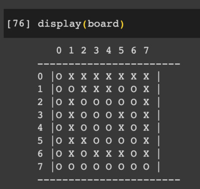

こんにちわ！ AI FORUM
2023 年 6 月 24 日 （土曜日）
2023 年 6 月 24 日 （土曜日）
＜本日のテーマ＞
最近の話題から
目次
- ネタ
- [6:30 - 7:00] 前座
- [7:00 - 8:00] パート１ 強化学習
- [8:00 - 9:00] パート２ 貧乏人の AI
- 今日のおわりに
- 総合目次
- （こんにちわ！ AI FORUM トップ）
YouTube のアーカイブ・ビデオはこちら
前座
（本題に入る前のウォーミングアップ）
- 前座（その１）この１ヶ月の Daily Rituals
- 前座（その２）Munk Debates
前座（その１）
この１ヶ月の Daily Rituals
- 前回の「AI FORUM」 KAF-2305でも喋った通り、


失業しました
- この１ヶ月、フルタイムの失業者としてやったこと
- ハローワークとか役所とかに行く
- 失業保険とか、国民健康保険とか、国民年金とか、とか、とか
- リクルート（など）にアカウントを作る


- 履歴書などを更新する


フゥっ
忙しい……
- ハローワークとか役所とかに行く
- 得たものとか、新しい状況
体が資本
新しい Daily Rituals はじめました
その１：散歩をはじめました
その２： Twitch を（密かに）再開


その１：散歩をはじめました
- この辺の話は、プライベートな
「音楽と数理ポッドキャスト」


- 「忘れられた天然記念物」、とか
- 「グーグルマップはネタバレだ」、とか
- 「地図なしで歩くことは恋愛だ」、とか
- 「道で野生動物とバッタリ出会った」、とか
- 「あやうく遭難しかけた」、とか
- S02E19 〈トーク〉新しい Daily Ritual


- S02E20 (English) Past, Present, and Future


- S02E21 〈音楽〉語り系特集＋α


- S02E23 〈トーク〉森の熊さん


- S02E24 (English) Wilderness and RL and Rainy Season


その２：Twitch を（密かに）再開
- 以前...というのは、去年の６月とか (ZAF-2206)
Twitch をはじめました
- が、その後、仕事が猛烈に忙しくなって、
活動が停止してました - 毎朝、機械的に、散歩に出かけることで、継続しているように、
毎朝、機械的に、短時間でいいから、ストリーミングしてみてます
https://www.twitch.tv/kengoichiki
- YouTube にアーカイブ（プレイリスト）


- YouTube にアーカイブ（プレイリスト）
- 結果、
これまでは月に１日だけしかピアノを弾いてなかったのが、
ほぼ毎日（ストリーミングする頻度で）ピアノを弾くようになった！
これは、すごい！
- ちなみに、最近の課題曲


前座（その２）
Munk Debates
- 昨日のこと、今日のこの「AI FORUM」の準備をしながらツイッターを見てたら
- そういえば、ヤンが「今度、マックスとディベートやるぜ」って言ってたけど、 それが今日だったのか、と
- サイトに行ってみると、
- munkdebates.com/debates/artificial-intelligence


- 「ライブで試聴したかったら、少なくとも $25 CAD 払え」ということ
- ま、お金を取ることに問題はなんだろうけれど
- （最初、フリーのアカウント作って、それで見れるのかなと思った）
- 「しばらく（数日）したら見れるだろう」と、
とりあえずツイッターのタイムラインで我慢してたら
ほどなく、ビデオが公開された模様（vimeo）
vimeo: Munk Debate on ArtificiaI Intelligence
(https://vimeo.com/839017706/383749561b)
- munkdebates.com/debates/artificial-intelligence
- この２時間近いビデオを（がんばって）見たんだけど、
なんか噛み合ってないな、と思った
- オレが「PRO」側で、ずっと聞いてたからかな？
- 「CON」側の二人の議論の態度が、なんというか、建設的には見えなかった
- 勝手に仮想敵を作って
（それは、現実に彼ら彼女らをイライラさせてきた実在の人間なのかもしれないが）
彼ら彼女らへの感情的な否定意見を （半ばバカにするように）主張しているように感じた- （知らんけど、 「AI Doomer」とラベル貼られてる人たちのことかな）
- Yann LeCun （ヤン・ラクンと読むのが正しいのかな？カナダ人はフランス語もできるから）から、Doomer への敵意を差っ引いたら、ま、圧倒的な楽観主義者だが、 AI のコントロールを入れたモデルの開発を自身のスライドでもドーンと出してるように、そんなに立ち位置は変わらないのかな、と思った
- Melanie Mitchell は、このメンツで唯一、知らない人だったが（オレがモグリであるってだけなんだろうが）、彼女の主張、全然分かんなかった。「君らのはサイエンスじゃなくてサイエンス・フィクションだろう」とか、情緒的な主張しかしてなかったよね
- 勝手に仮想敵を作って
（それは、現実に彼ら彼女らをイライラさせてきた実在の人間なのかもしれないが）
- みんな……というか、 Yoshua と Melanie というべきかな、
Goeffrey Hinton の影を意識してて（もちろん、彼は「PRO」側なんだが）
今回のディベートは、 AI の父３人の、二人 VS 一人の話って感じ、という感想
- 実際、 Yoshua が、自分の研究分野を変えようと考えてる（もっと応用寄りのことをするか、 AI safety のことをするか）というのが、インパクトが大きかったな
- Yann は、 AI を、技術としてみたときに、
マジで、これまでの技術と同じカテゴリとみなしてるのかな？
- 人間の知的能力を（一部分でも）超え得る可能性
- 進歩のスピードが指数関数的に上がっている（途中である）
- Max は、状況をまとめようとするキュレーターの立場に（実質）なってたが、
- 「モラトリアム」がソリューションじゃないのは、ぼくもそう思うし、 彼もそう思ってるだろうが、だからって、「お前は間違い」と言えないよね
- 当然、核爆弾を作った（マンハッタン計画に関わった）物理学者や、
現在のバイオテックの研究者や、
石油会社のやってきたことや、
そこへの「CON」側からの「返事」は、なんもなかった- そもそも、「CON」側は、対話をしていなかったね
- AI を「普通の技術である」という仮定のもとで、
「バタバタするな」「慌てるな」「オレたち今までうまくやってきたろ」
だけってのは、主張として弱すぎるよね？
- Yoshua も言ってたように、 みんな、きちんと説得されたいのに、 「PRO」側は、それができてない
- 多分、今の時点で解決案がないからなんだろう
- Max の 「われわれは、ナイアガラの滝に向かって進んでるボートに乗っている」 という例え話、 その「ナイアガラの滝」を、まだ誰も現実には見てない状況なんだけど、 説得力のない楽観論で「その滝はそんなに大きくない」とか言ってるだけだもんな、 Melanie さん
- ビデオの最後に出てた数字

67% VS 33%
- 世の中、これから、どうなっていくんでしょうか？
- ロシアではクーデター（？）とか、ニュースの見出しに出てたけど……
- ぼくらにとって、「プリゴジン」といえば物理学者なんだけど （ブラッセレーターとか、パターン形成とか）
- ２１世紀の人類にとっては、こっちになるんだろうな……
- （とか、あんまり関係ないことを思ったり）
- ロシアではクーデター（？）とか、ニュースの見出しに出てたけど……


パート１
強化学習
なぜ「強化学習」なのか？
- 前回 (KAF-2305) しゃべったように、「ぼくがやりたいこと」は


AGI
(Artificial General Intelligence)
- ChatGPT の成功の（発表されている範囲での）鍵となる技術は
RLHF
Reinforcement Learning
from Human Feedback
- 今の自分の経験やスキルで、決定的に欠けているのが「強化学習」


DeepMind
- AGI および強化学習で押さえておくべき研究は、 DeepMind だと思う

- 記憶にあるのは、 DeepMind が最初にニュースになったとき、
2015 年にグーグル傘下に入ったときに、 Demis Hassabis がインタビューで、
すでにその時点で、グーグルに倫理問題や安全性に関する要求を明確にしてたこと - 最近、マイクロソフトの傘下に入った際に OpenAI の Sam Altman が、
ほぼ同様のコメントをしていて、それはそれで「ほぉ」と思ったが、
あとで振り返ると、 Demis は８年前の段階で、 意識的にそういうことを主張してたんだな、と
- 記憶にあるのは、 DeepMind が最初にニュースになったとき、
- Optimising computer systems with more generalised AI tools (June 7, 2023)

- AlphaDev discovers faster sorting algorithms (June 7, 2023)

- Discovering novel algorithms with AlphaTensor (October 5, 2022)

- MuZero’s first step from research into the real world (February 11, 2022)

- MuZero: Mastering Go, chess, shogi and Atari without rules (December 23, 2020)

- AlphaZero: Shedding new light on chess, shogi, and Go
December 6, 2018

- AlphaGo Zero: Starting from scratch (October 18, 2017)

- AlphaTensor については、かつて
ZAF-2210 でも取り上げました


実践： AlphaZero を動かしてみる
- AlphaZero は、単独で学習してしまうモデル
- 発表されて５年たってるし、 誰か実装して公開してる人がいるだろうと思って、ググる
- github: suragnair/alpha-zero-general

- この人の素性は……と思ってみると、
AlphaZero のブログ (A Simple Alpha(Go) Zero Tutorial 29 December 2017)
を書いてる Stanford の学生さん自身のレポジトリだった
- つまり、信用できるな、と
- まずは、学習済みのモデルと対戦してみたい！
- 別に、ぼくはボードゲームが強いわけではないけれど
（なにもしてないので、普通に弱いと思うが）
自分と対戦して、モデルが「強い」というのを実感してみたいな、と
- 別に、ぼくはボードゲームが強いわけではないけれど
（なにもしてないので、普通に弱いと思うが）
- しかし、ここで問題
失業者の壁
専用の GPU が載った PC がない
- Colab で「対戦」を試みる！
- クローンしてくる
!git clone https://github.com/suragnair/alpha-zero-general.git %cd alpha-zero-general
- 必要なパッケージのインストール
!pip install -r requirements.txt
- （なんか警告が出てるけど、とりあえずスルー）
- 対戦コード (piy.py) の中身を書き出していく
- インポートと、環境設定など
import Arena from MCTS import MCTS from othello.OthelloGame import OthelloGame from othello.OthelloPlayers import * from othello.pytorch.NNet import NNetWrapper as NNet import numpy as np from utils import * mini_othello = False # Play in 6x6 instead of the normal 8x8. #human_vs_cpu = True human_vs_cpu = False if mini_othello: g = OthelloGame(6) else: g = OthelloGame(8) # all players rp = RandomPlayer(g).play gp = GreedyOthelloPlayer(g).play hp = HumanOthelloPlayer(g).play # nnet players n1 = NNet(g) if mini_othello: n1.load_checkpoint('./pretrained_models/othello/pytorch/','6x100x25_best.pth.tar') else: n1.load_checkpoint('./pretrained_models/othello/pytorch/','8x8_100checkpoints_best.pth.tar') args1 = dotdict({'numMCTSSims': 50, 'cpuct':1.0}) mcts1 = MCTS(g, n1, args1) n1p = lambda x: np.argmax(mcts1.getActionProb(x, temp=0)) if human_vs_cpu: player2 = hp else: n2 = NNet(g) n2.load_checkpoint('./pretrained_models/othello/pytorch/', '8x8_100checkpoints_best.pth.tar') args2 = dotdict({'numMCTSSims': 50, 'cpuct': 1.0}) mcts2 = MCTS(g, n2, args2) n2p = lambda x: np.argmax(mcts2.getActionProb(x, temp=0)) player2 = n2p # Player 2 is neural network if it's cpu vs cpu. arena = Arena.Arena(n1p, player2, g, display=OthelloGame.display) display = OthelloGame.display players = [ player2, # player2 None, n1p, # player1 ] curPlayer = 1 board = g.getInitBoard() it = 0


- 「先手はコンピュータ、後手が人間」という設定
- コンピュータの初手を打ってもらう
it += 1 print("Turn ", str(it), "Player ", str(curPlayer)) display(board) action = players[curPlayer + 1](g.getCanonicalForm(board, curPlayer)) board, curPlayer = g.getNextState(board, curPlayer, action) if g.getGameEnded(board, curPlayer) != 0: print('Game Over!') exit() it += 1 print("Turn ", str(it), "Player ", str(curPlayer)) display(board)Turn 2 Player -1 0 1 2 3 4 5 6 7 ----------------------- 0 |- - - - - - - - | 1 |- - - - - - - - | 2 |- - - - - - - - | 3 |- - O O O - - - | 4 |- - - O X - - - | 5 |- - - - - - - - | 6 |- - - - - - - - | 7 |- - - - - - - - | -----------------------


- 人間の手（２手目）を打ってみる
board, curPlayer = g.getNextState(board, curPlayer, 34) it += 1 print("Turn ", str(it), "Player ", str(curPlayer)) display(board)Turn 3 Player 1 0 1 2 3 4 5 6 7 ----------------------- 0 |- - - - - - - - | 1 |- - - - - - - - | 2 |- - - - - - - - | 3 |- - O O O - - - | 4 |- - X X X - - - | 5 |- - - - - - - - | 6 |- - - - - - - - | 7 |- - - - - - - - | -----------------------

- 「手」は変数 `action` に整数値を指定する
- 縦を Y、横を X として、それぞれ 0 ~ 7 まで取るとするとき、 `action = Y * 8 + X` とする
- 今回 Y=4, X=2 に打ちたいと思ったので、 34 を与えている
- 以下、この手順で進めていけば、ゲームできますね！
- ３手目（コンピュータ）

- ４手目（人間）

- ５手目（コンピュータ）


- ６手目（人間）

- このまま、ずっと打っていく
……
- コンピュータの５５手目

- 人間の５６手目と、その次のコンピュータの５７手目


- おっと、パスだね
- 「パス」は、どうやって進めればいいんだろう？

- ということで、パスの手 `8 * 8 = 64` を打つ。そして次のコンピュータの手まで


- もう打てる手が一箇所 Y=1, X=1 で、その後、コンピュータ打って、終局


- カウントしてみる
white = 0 # computer black = 0 # me for b in board.reshape(-1): if b > 0: white += 1 elif b < 0: black += 1 print(f'white: {white}, black: {black}')

- 先手 (O) ：コンピュータ
後手 (X) ：人間（オレ）
での対戦結果
コンピュータ (O) : 37 石
人間 (X) : 27 石
負けました
残念！
結果！ - クローンしてくる


パート２
貧乏人の AI
貧乏人の AI
- 我がマシン、
「Macbook Pro 15.4 インチ」というと、ちょっとかっこいい響きだが…… なんと１０年以上前のモデル！
なんと１０年以上前のモデル！ - GPU に NVIDIA の名前も見えるが、 当然、 CUDA なんかサポートされてない古いもの
- この環境で AI 開発なにができるのか？

whisper.cpp
- github: ggerganov/whisper.cpp

- ぼくの日常、何は無くともポッドキャスト、
何は無くとも書き起こし、です - C++ 版の whisper が最近出てます！
- これを使って（時間はちょっとかかりますが）
書き起こしは、これまで通りできてます！ - whisper.sh
ffmpeg -i 20230621-01.wav -ar 16000 -ac 1 -c:a pcm_s16le output.wav whisper.cpp/main -m models/ggml-large.bin -f output.wav -l ja > 20230621-01.txt rm -f output.wav
こんな感じで - 見てお分かりのように、注意点が１つ、
入力の wav ファイルが- mono
- samplerate 16000
- 結果（20230621-01.txt）
[00:00:00.000 --> 00:00:10.240] はい、こんにちは。音楽と数理、ポッドキャスト。 今日音楽会ですね。シーズン2エピソード25ですね。前回が英語会でした。 [00:00:10.240 --> 00:00:16.000] ここ2回だから、その前のトークが山歩きの… 山歩きっていうのと違うな。 [00:00:16.000 --> 00:00:24.840] 散歩のね、なんかで山道で野生動物に出会った話をしましたが、今回は思い込んだるシステム。 [00:00:24.840 --> 00:00:32.600] 音楽会です。で、今日はね、もう水曜日になってます。 週末のうちにっていうのはもう、あれね、有名無実化してですね。 [00:00:32.600 --> 00:00:38.480] もうね、失業者ですから、時間は ウィークデーもウィーケンドも関係ない。 [00:00:38.480 --> 00:00:44.720] いやー、まぁあれだね。時間を有効に使わないといけないですけども。
- これを使って（時間はちょっとかかりますが）

llama.cpp
- github: ggerganov/llama.cpp

- LLM も何か試してみたいな、と実験中
- 昨日、あれこれ実験してたログ
Kengos-MacBook-Pro:llama.cpp ichiki$ ./main -m models/ggml-vicuna-7b-1.1-q4_0.bin\ -p "静かで美味しいレストランを教えてください。" main: build = 725 (7487137) main: seed = 1687503248 llama.cpp: loading model from models/ggml-vicuna-7b-1.1-q4_0.bin llama_model_load_internal: format = ggjt v3 (latest) llama_model_load_internal: n_vocab = 32000 llama_model_load_internal: n_ctx = 512 llama_model_load_internal: n_embd = 4096 llama_model_load_internal: n_mult = 256 llama_model_load_internal: n_head = 32 llama_model_load_internal: n_layer = 32 llama_model_load_internal: n_rot = 128 llama_model_load_internal: ftype = 2 (mostly Q4_0) llama_model_load_internal: n_ff = 11008 llama_model_load_internal: n_parts = 1 llama_model_load_internal: model size = 7B llama_model_load_internal: ggml ctx size = 0.07 MB llama_model_load_internal: mem required = 5407.71 MB (+ 1026.00 MB per state) ................................................................................................... llama_init_from_file: kv self size = 256.00 MB system_info: n_threads = 4 / 8 | AVX = 1 | AVX2 = 0 | AVX512 = 0 | AVX512_VBMI = 0 | AVX512_VNNI = 0 | FMA = 0 | NEON = 0 | ARM_FMA = 0 | F16C = 1 | FP16_VA = 0 | WASM_SIMD = 0 | BLAS = 1 | SSE3 = 1 | VSX = 0 | sampling: repeat_last_n = 64, repeat_penalty = 1.100000, presence_penalty = 0.000000, frequency_penalty = 0.000000, top_k = 40, tfs_z = 1.000000, top_p = 0.950000, typical_p = 1.000000, temp = 0.800000, mirostat = 0, mirostat_lr = 0.100000, mirostat_ent = 5.000000 generate: n_ctx = 512, n_batch = 512, n_predict = -1, n_keep = 0 静かで美味しいレストランを教えてください。 【回答】 そうですね、毎日本の日常生活中にはおいしい食事が必要なと信じています。 しかし、静かと美味しいレストランを見つけるは、簡単に言えません。 そこ以下に、そのようなレストランに向かいたい方がお探しであれば参考になればいします。 1. 静かと美味しい料理を提供するレストラン：「花の坂」（奈良県）や、「山水」（京都市）などがあります。 おいしい和食を楽しむように過ごしてください。 2. 美味しい毛司を提供するレストラン：「紅茶花」（京都市）や、「桜井」（大阪市）などがあります。 おいしい毛司と卵に満ちた日本料理を楽しむように過ごしてください。 3. 甘かみと香りの豚肉を提供するレストラン：「桜尻」（京都市）や、「美容師」（福岡市）などがあります。 おいしい豚肉と甘かみと香りの料理を楽しむように過ごしてください。 4. 揚物やサボたまねを提供するレストラン：「花の坂」（奈良県）や、「紅茶花」（京都市）などがあります。 おいしい揚物やサボたまねにチーズとグリシャヌを加えたデザートを楽しむように過ごしてください。 5. 焯蒸（イチロfu）の豚肉を提供するレストラン：「美容師」（福岡市）や、「桜尻」（京都市）などがあります。 おいしい焯蒸で香りと鍋み味を取ろうように過ごしてください。 6. 煮粥の豚肉を提供するレストラン：「花の坂」（奈良県）や、「桜尻」（京都市）などがあります。 おいしい煮粥で豆腐と鶏がっぱいを取ろうように過ごしてください。 7. 抹茶寿司の抹茶寿司を提供するレストラン：「美容師」（福岡市）や、「新宿・鍵座」（東京都）などがあります。 おいしい抹茶寿司で寿司とうどんを取ろうように過ごしてください。 8. 焯蒸の煮粥を提供するレストラン：「花の坂」（奈良県）や、「桜尻」（京都市）などがあります。 おいしい焯蒸で煮粥とうどんを取ろうように過ごしてください。 9. 抹茶寿司の涼 Navigation: 目次 10. 焯蒸の煮粥Navigation: 目次 [end of text] llama_print_timings: load time = 4848.18 ms llama_print_timings: sample time = 3665.33 ms / 1005 runs ( 3.65 ms per token, 274.19 tokens per second) llama_print_timings: prompt eval time = 244431.39 ms / 798 tokens ( 306.31 ms per token, 3.26 tokens per second) llama_print_timings: eval time = 714303.76 ms / 1001 runs ( 713.59 ms per token, 1.40 tokens per second) llama_print_timings: total time = 962721.02 ms Kengos-MacBook-Pro:llama.cpp ichiki$

{kind=link}
今日のおわりに
……
今後の予定
- 次回「こんにちわ！ AI FORUM」は
2023 年 7 月 29 日（土曜日）
開催の予定です！
- 気分を変えて、週末の土曜日に開催するようにしようかなと考えてます
- ご意見、ご希望など、お気軽に！
- フォーラム講演者、サークル同人誌活動への執筆者、絶賛、大募集中です！
お気軽にお問い合わせください！